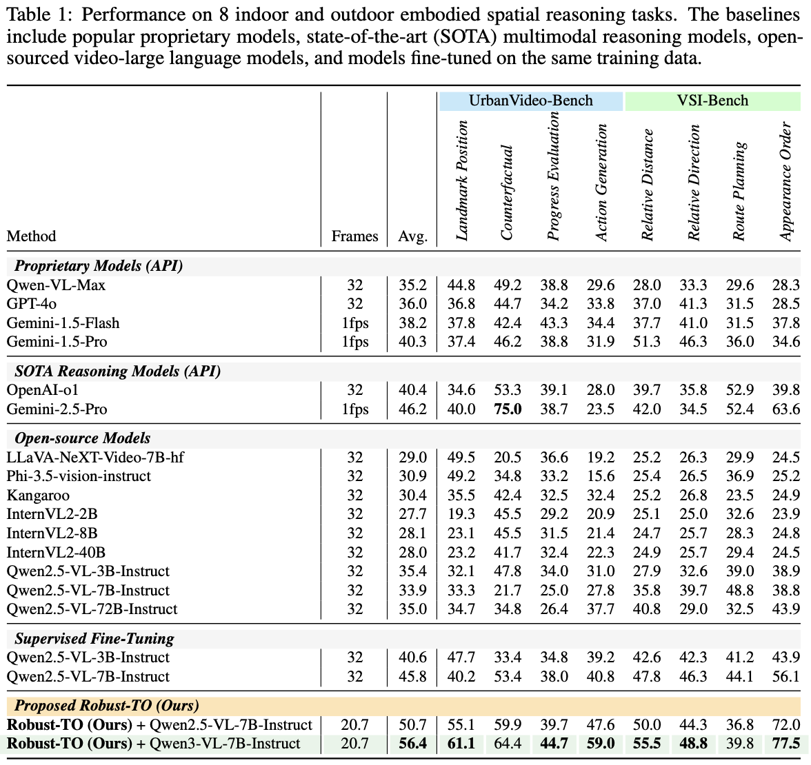

Confidence-Aware Tool Orchestration
for Robust Video Understanding
Threading trustworthiness through every reasoning step
Robust-TO is an agentic framework that makes per-frame trustworthiness a first-class signal across the entire video reasoning pipeline. A unified (result, confidence) interface couples each tool's intrinsic certainty with a parameter-free disturbance estimate, enabling reliability-guided frame selection, disturbance-aware tool routing, and three-tier evidence synthesis.
Optimized with a confidence-cost GRPO reward that jointly balances correctness, evidence reliability, and compute, Robust-TO delivers +10.6 average accuracy over the strongest open-source baseline, the smallest clean-to-corrupted accuracy drop among all compared methods, and <5% latency overhead on clean inputs — degrading gracefully rather than failing silently.
Video-LLMs trust every frame equally and never report when they shouldn't. Robust-TO teaches an agent to know what it cannot see, route around it, and answer with calibrated confidence — turning catastrophic failure under real-world corruption into graceful, measurable degradation.
- 01Problem formalization. We define and quantify the Blind Trust Problem — the systematic decoupling of Video-LLM accuracy from self-reported confidence under real-world corruption.
- 02Confidence-aware orchestration. A unified (result, confidence) tool contract drives reliability×relevance frame selection, disturbance-aware routing, and tiered evidence synthesis.
- 03Confidence-cost GRPO. A reward jointly optimizing correctness, evidence reliability, and efficiency, with a frozen disturbance estimator that prevents reward gaming.
- 04State-of-the-art robustness. +10.6 avg accuracy, the smallest clean→corrupted drop, 35% fewer frames, and <5% overhead across 8 tasks on two embodied benchmarks.
vs. strongest OSS
smallest of all methods
on clean inputs
2 benchmarks
Why frontier Video-LLMs fail silently
Embodied agents see motion blur, glare, occlusion, low light, and sensor noise constantly. Under these conditions, current Video-LLMs lose 15–30 accuracy points on embodied benchmarks — but their internal confidence does not move. A downstream planner has no signal that the perception it depends on has quietly become unreliable.
Existing robustness work hardens a single monolithic model. Robust-TO takes the opposite view: keep the tools, but make the agent reason about their trustworthiness. Every observation carries an explicit reliability estimate, and that estimate shapes which frames are read, which tools are called, and how evidence is fused into an answer. Figure 2 traces this loop on a single corrupted flight.
Figure 2. Motivating workflow. Given a degraded drone flight and the query “What major landmarks does the drone pass, and in what order?”, Robust-TO first assesses per-frame quality, keeps only the top-k trustworthy frames, routes each sub-query to the tool best suited to it, and fuses tiered evidence (High / Mid / Low) into an answer it can label HIGH confidence — rather than trusting every corrupted frame equally. This confidence-aware loop is precisely what converts silent failure into graceful, measurable degradation.
The Robust-TO pipeline
A single trustworthiness signal flows from raw frames to the final answer. Each stage consumes the previous stage's confidence and emits its own — the agent never reasons over an observation without knowing how much to trust it.
The complete module-level architecture — frame profiling, the disturbance-aware router, three-tier synthesis, and the GRPO reward — is given in Figure 1. Below we distill the four design principles that make that flow robust.
Four design principles
Reliability is relative
Frames are scored by reliability × relevance; corrupted-but-irrelevant frames and clean-but-uninformative frames are both pruned before any tool fires.
Route to the robust tool
Blur favors caption_frame; occlusion favors recognize_action; low light favors enhanced detect_objects — corruption type selects the tool, not the other way around.
Doubt is structured
Contradictory MEDIUM-tier facts are discarded rather than averaged, so a robust answer emerges from the evidence that actually holds up.
Confidence can't be gamed
A frozen N* disturbance estimator anchors the GRPO reward — the agent is rewarded for being right and calibrated, never for bluffing.
Watch trustworthiness drive the agent
Apply real-world corruptions to an embodied navigation frame and observe how Robust-TO re-estimates reliability, re-routes to a robust tool, and adjusts its evidence tier — while a blind baseline's confidence stays flat. Toggle corruptions and drag the intensity.
State-of-the-art robustness and accuracy
Evaluated on UrbanVideo-Bench (outdoor embodied: LP, CF, PE, AG) and VSI-Bench (indoor spatial: RDist, RDir, RP, AO) under clean and RoVA-V1 corrupted variants — Motion Blur, Glare, Occlusion, Low-Light, and Gaussian Noise. Best per column in bold; ★ marks our full model.

Reading Table 1. Across all eight UrbanVideo-Bench and VSI-Bench tasks, Robust-TO + Qwen3-VL-7B reaches 56.4 average accuracy — +10.6 over the strongest open-source / fine-tuned baseline (Qwen2.5-VL-7B SFT at 45.8) and ahead of every proprietary and SOTA-reasoning model, including Gemini-2.5-Pro (46.2). It posts the best score on six of the eight tasks (e.g. Appearance Order 77.5, Landmark Position 61.1, Action Generation 59.0) while reading only 20.7 frames on average versus 32 for the baselines — higher accuracy at lower cost.
| Method | Motion Blur | Glare | Occlusion | Low-Light | G. Noise | Avg. |
|---|---|---|---|---|---|---|
| GPT-4o | 34.0 | 32.0 | 30.0 | 34.5 | 30.5 | 32.2 |
| Gemini-2.5-Pro | 39.0 | 37.8 | 35.2 | 40.5 | 38.0 | 38.1 |
| Video-R1 + Qwen3-VL-7B | 49.5 | 48.0 | 45.8 | 50.2 | 49.0 | 48.5 |
| Robust-TO + Qwen2.5-VL-7B | 48.0 | 46.8 | 44.5 | 48.5 | 47.7 | 47.1 |
| ★ Robust-TO + Qwen3-VL-7B | 55.2 | 54.0 | 51.8 | 56.0 | 54.5 | 54.3 |
Smallest drop, fewer frames, lower latency
Robust-TO + Qwen3-VL-7B sets the best result on every task and every corruption type, while exhibiting the smallest clean-to-corrupted accuracy drop (Δ = 3.0) among all compared methods. Crucially, robustness does not cost compute: by reading 35% fewer frames it cuts inference time by over 35% and adds under 5% overhead on clean inputs — graceful degradation that is essentially free.
Read the full paper
The preprint includes all derivations, the full ablation suite, per-tool implementation details, and qualitative case studies under concurrent corruptions.
BibTeX
If you find Robust-TO useful for your research, please consider citing:
@article{he2026robustto,
title = {Confidence-Aware Tool Orchestration for Robust Video Understanding},
author = {Yangfan He and Yujin Choi and Jaehong Yoon},
year = {2026},
journal = {arXiv preprint arXiv:2603.xxxxx},
}